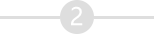
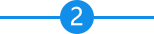
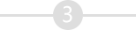
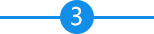

<ion-view view-title="附件类型" class="nav-title">
	<ion-nav-bar>
		<ion-nav-buttons side="left">
			<button class="button button-icon" ng-click="goback()">
				<i class="ion-ios-arrow-left nav-title" style="font-size: 30px;"></i>
			</button>
		</ion-nav-buttons>
	</ion-nav-bar>
	<ion-content class="container" style="color: black;" ng-style="{'margin-bottom':isShow ?'66px':'0'}">
    <div ng-show = "showNextStep" class="step-container">
      <div class="child-step">
        
        
        <p class="step-text">申请人信息</p>
      </div>
      <div class="child-step">
        
        
        <p class="step-text">不动产信息</p>
      </div>
      <div class="child-step">
        
        
        <p class="step-text">上传材料</p>
      </div>
      <div class="child-step">
        
        
        <p class="step-text">提交申请</p>
      </div>
    </div>
		<div ng-repeat="fjzl in fjzlList" ng-if="fjzl.filelist>0||(fjzl.clmc!='询问笔录'&&fjzl.clmc!='申请视频'&&fjzl.clmc!='不动产登记申请书')" style="padding-right: 0px !important; background-color: white !important">
			<div style="width: 100%;min-height: 40px;padding: 5px 10px;display: flex;align-items: center;">
				<p ng-if="fjzl.sfbx" style="color: red;font-size: 16px;">*&nbsp;</p>
				<p style="font-size: 16px;margin-left: 5px;">{{fjzl.clmc}}<i class="icon ion-ios-information" style="margin: 0 4px;color: #1292FF;" ng-show="fjzl.clsls.length" ng-click="clickTips($index);"></i></p>
			</div>
			<!--显示拍摄照片-->
			<form class="form" style="padding-top: 10px;padding-bottom: 25px; border-top:solid 1px rgb(231,231,231);">
				<div class="nav1" ng-repeat="file in fjzl.filelist" on-tap="openFile({{file}})" on-hold="showdel();" style="border:dashed 3px #ccc;">

          
          

          

          <!-- 询问笔录、申请视频、不动产申请书不可新增，长按不展示删除按钮 -->
					<div on-touch="delete(file)" class="del" ng-if="isShowDel&&fjzl.clmc!='询问笔录'&&fjzl.clmc!='申请视频'&&fjzl.clmc!='不动产申请书'" ng-init="isShow=false">
						
					</div>
					<div style="position: absolute; bottom: 0; left: 0; color: #000;height: 20px; line-height: 20px; width: 100%; background-color: #CCCCCC !important;">{{file.status}}</div>
				</div>
        <!-- 询问笔录、申请视频、不动产申请书不可新增，不展示新增按钮 -->
				<div class="nav1" ng-show="isShow&&fjzl.clmc!='询问笔录'&&fjzl.clmc!='申请视频'&&fjzl.clmc!='不动产申请书'" ng-click="addPhoto(fjzl)">
					<div style="width: 100%;height: 100px; border:dashed 3px #ccc;">
						<div style="margin-top: -15px;" class="ion-plus"></div>
						<div style="margin-top: -85px;">拍摄照片</div>
					</div>
				</div>
				<div style="clear: both;"></div>
			</form>
			<div ng-if="bigImage" ng-init="bigImage=false" style="position: fixed;top: 0;left: 0;z-index: 10; width: 100%;height: 100%;background-color: #fff; text-align: center;" ng-click="hideBigImage()">
				
			</div>
		</div>
	</ion-content>
	<div id="modal-overlay" ng-show='showTips'ng-click="clickTips(-1);">
    <div class="modal-data">
      
    </div>
  </div>


  <div ng-show="showNextStep" class="step-btn-container">
     <p class="previous-step-btn" ng-click="goback()">上一步</p>
     <p class="next-step-btn" ng-click="nextStep()">下一步</p>
   </div>
  <p ng-show="!showNextStep&&!fromWeb "  class="bigBtn-blue-bottom" ng-click="goback()">返回</p>
</ion-view>